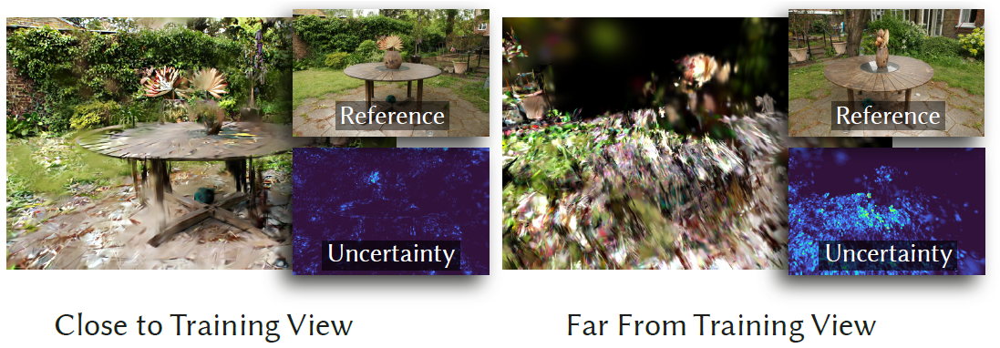
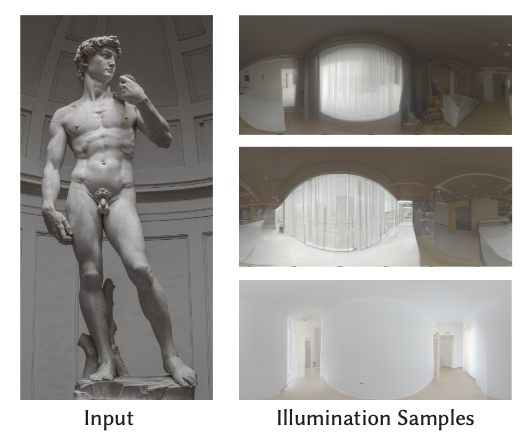

Homepage
Contact
Research Interests
- Computer Vision, Computer Graphics, Machine Learning
- Differentiable rendering, Inverse rendering
- Diffusion model based 2D/3D generation and editing
- Uncertainty Quantification
Publications
 |
IntrinsicEdit: Precise generative image manipulation in intrinsic space
Linjie Lyu
Valentin Deschaintre
Yannick Hold-Geoffroy
Miloš Hašan
Jae Shin Yoon Thomas Leimkühler Christian Theobalt Iliyan Georgiev Siggraph 2025 (TOG) Abstract
Generative diffusion models have advanced image editing with high-quality results and intuitive interfaces such as prompts and semantic drawing. However, these interfaces lack precise control, and the associated methods typically specialize on a single editing task. We introduce a versatile, generative workflow that operates in an intrinsic-image latent space, enabling semantic, local manipulation with pixel precision for a range of editing operations. Building atop the RGB-X diffusion framework, we address key challenges of identity preservation and intrinsic-channel entanglement. By incorporating exact diffusion inversion and disentangled channel manipulation, we enable precise, efficient editing with automatic resolution of global illumination effects -- all without additional data collection or model fine-tuning. We demonstrate state-of-the-art performance across a variety of tasks on complex images, including color and texture adjustments, object insertion and removal, global relighting, and their combinations.
|
|  |
Manifold Sampling for Differentiable Uncertainty in Radiance Fields
Linjie Lyu
Ayush Tewari
Marc Habermann
Shunsuke Saito
Michael Zollhoefer Thomas Leimkühler Christian Theobalt Siggraph Asia 2024 Abstract
Radiance fields are powerful and, hence, popular models for representing the appearance of complex scenes. Yet, constructing them based on image observations gives rise to ambiguities and uncertainties.
We propose a versatile approach for learning Gaussian radiance fields with explicit and fine-grained uncertainty estimates that impose only little additional cost compared to uncertainty-agnostic training.
Our key observation is that uncertainties can be modeled as a low-dimensional manifold in the space of radiance field parameters that is highly amenable to Monte Carlo sampling.
Importantly, our uncertainties are differentiable and, thus, allow for gradient-based optimization of subsequent captures that optimally reduce ambiguities.
We demonstrate state-of-the-art performance on next-best-view planning tasks, including high-dimensional illumination planning for optimal radiance field relighting quality.
|
|  |
Diffusion Posterior Illumination for Ambiguity-aware Inverse Rendering
Linjie Lyu
Ayush Tewari
Marc Habermann
Shunsuke Saito
Michael Zollhoefer Thomas Leimkühler Christian Theobalt Siggraph Asia 2023 (TOG) Abstract
Inverse rendering, the process of inferring scene properties from images, is a challenging inverse problem. The task is ill-posed, as many different scene configurations can give rise to the same image. Most existing solutions incorporate priors into the inverse-rendering pipeline to encourage plausible solutions, but they do not consider the inherent ambiguities and the multi-modal distribution of possible decompositions. In this work, we propose a novel scheme that integrates a denoising diffusion probabilistic model pre-trained on natural illumination maps into an optimization framework involving a differentiable path tracer. The proposed method allows sampling from combinations of illumination and spatially-varying surface materials that are, both, natural and explain the image observations. We further conduct an extensive comparative study of different priors on illumi- nation used in previous work on inverse rendering. Our method excels in recovering materials and producing highly realistic and diverse environment map samples that faithfully explain the illumination of the input images.
|
 |
Neural Radiance Transfer Fields for Relightable Novel-view Synthesis with Global Illumination
Linjie Lyu
Ayush Tewari
Thomas Leimkühler
Marc Habermann
Christian Theobalt
ECCV 2022 (Oral)
AbstractGiven a set of images of a scene, the re-rendering of this scene from novel views and lighting conditions is an important and challenging problem in Computer Vision and Graphics. On the one hand, most existing works in Computer Vision usually impose many assumptions regarding the image formation process, e.g. direct illumination and predefined materials, to make scene parameter estimation tractable. On the other hand, mature Computer Graphics tools allow modeling of complex photo-realistic light transport given all the scene parameters. Combining these approaches, we propose a method for scene relighting under novel views by learning a neural precomputed radiance transfer function, which implicitly handles global illumination effects using novel environment maps. Our method can be solely supervised on a set of real images of the scene under a single unknown lighting condition. To disambiguate the task during training, we tightly integrate a differentiable path tracer in the training process and propose a combination of a synthesized OLAT and a real image loss. Results show that the recovered disentanglement of scene parameters improves significantly over the current state of the art and, thus, also our re-rendering results are more realistic and accurate.
[pdf],
[video],
[project page],
[arxiv],
[code]
|
 |
Efficient and Differentiable Shadow Computation for Inverse Problems
Linjie Lyu
Marc Habermann
Lingjie Liu
Mallikarjun B R
Ayush Tewari Christian Theobalt ICCV 2021 AbstractDifferentiable rendering has received increasing interest for image-based inverse problems. It can benefit traditional optimization-based solutions to inverse problems, but also allows for self-supervision of learning-based approaches for which training data with ground truth annotation is hard to obtain. However, existing differentiable renderers either do not model visibility of the light sources from the different points in the scene, responsible for shadows in the images, or are too slow for being used to train deep architectures over thousands of iterations. To this end, we propose an accurate yet efficient approach for differentiable visibility and soft shadow computation. Our approach is based on the spherical harmonics approximations of the scene illumination and visibility, where the occluding surface is approximated with spheres. This allows for a significantly more efficient shadow computation compared to methods based on ray tracing. As our formulation is differentiable, it can be used to solve inverse problems such as texture, illumination, rigid pose, and geometric deformation recovery from images using analysis-by-synthesis optimization.
|
 |
Differentiable Rendering Tool
Marc Habermann
Mallikarjun B R
Ayush Tewari
Linjie Lyu
Christian Theobalt
Github
AbstractThis is a simple and efficient differentiable rasterization-based renderer which has been used in several GVV publications. The implementation is free of most third-party libraries such as OpenGL. The core implementation is in CUDA and C++. We use the layer as a custom Tensorflow op. The renderer supports the following features:
|
Education
- June 2021 - present:
Ph. D. student in Computer Science at the Universität des Saarlandes, Saarbrücken, Germany and the Max-Planck-Institut für Informatik
- October 2019 - March 2021
Graduate school student in Computer Science at the Universität des Saarlandes, Saarbrücken, Germany
- September 2015 - July 2019
Bachelor Student in Physics and Mathematics at the Tsinghua University